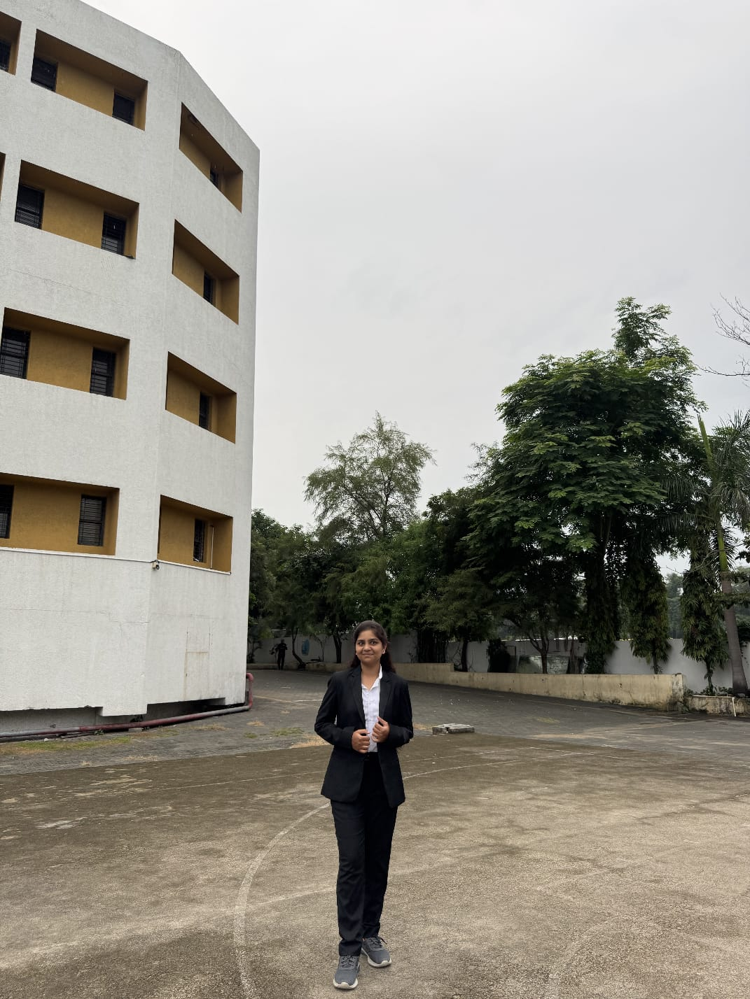

DATA SCIENCE ENGINEERING STUDENT
Turning data into
meaningful insights.
Hello, I’m Ketki Sanjay Kanade. I’m a Data Science student interested in analytics, machine learning, and using technology to solve real-world problems.
A LITTLE ABOUT ME

KK
Ketki Kanade
Data Science & Analytics
2024–28Degree journey
CuriousAlways learning
📊 Data curious
✦ Creative thinker
+
✳
01Explore my journey
Skills, projects, education — all in one place.
↓WHAT I’M ABOUT
Learning, building, growing.
I enjoy combining analytical thinking with creative problem-solving.
01 / SKILLS
Tools & techniques
From web fundamentals to Python-based data handling and analytics.
↗ 02 / PROJECTSIdeas into projects
Discover my portfolio website and Farmo concept for connecting farmers and buyers.
↗ 03 / EDUCATIONMy learning journey
A snapshot of my academic background and ongoing degree.
↗